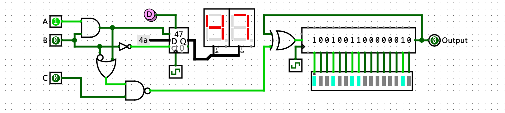

Logisim Evolution — Holy Cross Edition
Logisim is an educational tool for designing and simulating digital logic circuits. It lets you design and interactively simulate digital circuits by placing and wiring together buttons, switches, LEDs, simple gates, and hundreds of other components.

Download and Install
Which version should I download for Mac?
Recent Mac computers should use the "Apple Silicon" version. Under the Apple Menu, go to "About This Mac". If the chip says Apple M1, Apple M6, or any other similar chip, you have an Apple Silicon Mac. Older Intel-based Macs need a separate version. If you think that would be useful, please contact kwalsh@holycross.edu and one can be made available.
Mac Security Warning
The MacOS security gatekeeper may prevent you from opening the PKG file above directly. As of the time of publishing, the code has passed Apple security review and is digitally signed by the developer (myself, K. Walsh), but Apple regularly adds new restrictions that can cause new security warnings. To install, right-click and "Save As..." to save the PKG file to your Downloads folder. Then go to your Downloads folder in the finder, right click the PKG file and "Open with... Installer (Default)". If given a security warning, click "Open". This should install Logisim in your Applications folder.
Which version should I download for Windows?
This version of Logisim uses a standard windows installer program to install Logisim. It should not require administrator privileges to install, as it installs into your personal Program Files folder and in your start menu, rather than in the system-wide Program Files folder. The alternative zip-format download can be used if you'd rather run Logisim directly from your Downloads folder or copy it to a portable thumbdrive. The zip archive contains an EXE file you can click on to launch Logisim, along with the Java JAR file with Logisim code and a suitable Java runtime for windows: extract the compressed contents to a directory of your choice and click the EXE launcher.
Universal JAR
Windows and Mac versions will work only on Windows or Mac. The
platform-independent JAR file should work on any platform, but requires that
Java version 17 or above be installed separately if your computer doesn't
already have it. Java version 25 or higher is recommended. One good choice is
to use the Eclipse/Adoptium project Temurin
OpenJDK. To run the JAR file, open a command line (or Mac Terminal or
Windows CMD.exe or PowerShell prompt) and type
java -jar logisim-evolution-5.3.1hc.jar from within the directory
where you have downloaded the JAR file.
Documentation
Documentation for circuit component libraries, user tutorials, and other guides are all available within the app. Or you can access them online:
- Circuit Component Library Reference
- Beginners Guide & Other Documentation
- Documentation (in sometimes embarrassingly chaotic states of inaccuracy and disarray) is available in English, Spanish, Portuguese, French, German, Greek, and Russian.
Please don't hesitate to report bugs or other issues, or submit feature requests.
Features
Logisim is a mature, fully-featured program that has been used and developed over many years in multiple colleges and universities around the world.
- Interactive live simulation: you can interact with a circuit by supplying input via virtual buttons, switches, joystick, microphone, and other virtual devices, and see the output on virtual LEDs, 7-segment displays, LCD panels, etc.
- Using the combinational analysis window to move from a combinational circuit to truth table, logical expression, or Karnaugh map, and back again.
- Build stateful, sequential circuits using flip-flops, registers, counters, ROM, RAM and other state-holding components.
- Virtual keyboard and terminal output devices: your circuits can process keyboard input and generate character output.
- Use multi-bit bus wires (up to 32-bits) and tunnels to simplify wiring.
- Circuits can be embedded within each other as sub-circuits, with custom shaped appearance and dynamically updating visual effects.
- FPGA support: Logisim can convert your circuit to Verilog or VHDL, then synthesize and upload it to an FPGA. Note: not all components and circuit features are currently available for FPGA synthesis.
- Chronogram: visualize circuit behavior with a timeline of signal values.
- Logisim is open source and entirely free: use it for education, personal projects, or whatever else you want within the generous bounds of the GPLv3 license.
- Logisim has no telemetry or data collection of any kind. Your privacy is important.
- newType-to-insert: just type a component name to search the libraries.
- newQuick-help panel in the main window: for fast access to component reference sheets and examples. (work in progress)
- newExample circuits: Look in the File menu for demo circuits. (more to come)
- newHttp Input, Serial Input, and Serial Output components let your circuits interact in real-time with physical devices like Birdbrain Finch Robots (over bluetooth!), Arduinos (serial or bluetooth), and more.
- newNew audio and I/O components for generating, visualizing, and playing waveforms.
- newSupport for the Alchitry Cu V2 fpga demo board, with I/O hat.
- newImproved FPGA toolchain support, especially for Apio and openFPGALoader.
History
This version, Logisim-evolution (Holy Cross Edition) is maintained by Kevin Walsh at College of the Holy Cross.
Logisim was originally created by Dr. Carl Burch and actively developed by him until 2011. This is the "Holy Cross Edition", which is maintained and used by Holy Cross and others.
This repository is a fork of reds-heig logisim-evolution, which in turn is a fork of the original Logisim by Dr. Carl Burch.
License & Source Code
The code is licensed under the GNU GENERAL PUBLIC LICENSE, version 3.
View source code on GitHubCredits
The following institutions and people contributed to Logisim's development:
- Carl Burch — Hendrix College, USA
- Haute École Spécialisée Bernoise — Switzerland
- Haute École du paysage, d'ingénierie et d'architecture de Genève — Switzerland
- Haute École d'Ingénierie et de Gestion du Canton de Vaud — Switzerland
- Theldo Cruz Franqueira — Pontifícia Universidade Católica de Minas Gerais, Brasil
- Moshe Berman — Brooklyn College
Thanks also to the many individuals contributing bug reports, demo files, features, and feedback.